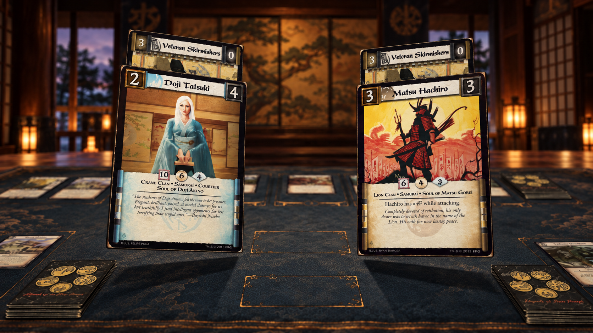
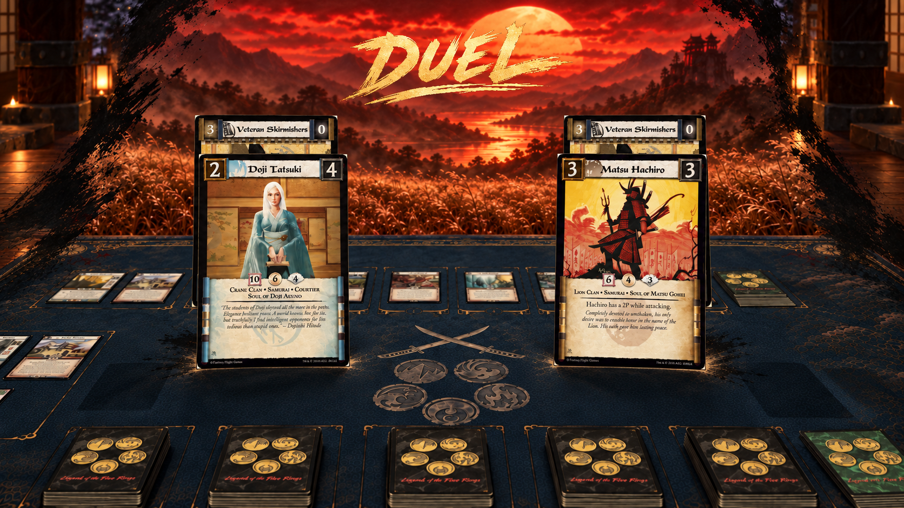

Table → Crimson
Native Godot review · approved sequence 1A → 2B → 3C → 4C · 4.5-second entrance.
The entrance hands off to the real duel. The prompt reflects whose decision it actually is. No extra Begin confirmation; Space / Escape skips presentation.
Native preview only; normal-match activation and the return journey remain separate. The combined branch has not been merged. Fixed-FPS capture is not a performance benchmark.
Approved direction alongside the native render
Original scans and the current game environments remain intact. Concept illustrations contain different table dressing; these are art-direction comparisons, not a claim of pixel equivalence.
Concept 2B · physical lift

Native · physical lift
Concept 3C · ink reveal

Native · ink reveal